Two cameras watch one hand, and one model holds the brick
The laptop's camera faces you. The phone's camera lies on the table and faces up. Each sees the same hand differently, and each is good at different things. One model on the laptop combines what both see into hands that keep their identity, whichever camera can see them. The grasp belongs to the hand, not to a camera: a brick held while camera A sees you is still held when only camera B does. If neither sees you, it waits.
On the laptop, press Camera A, then Floor. On the phone, open wg-butter-pair.html?floor, type the code and press Start. Lay the phone flat, screen up, in front of the laptop. Press Launch and follow the five lines. Press Scope to see both cameras and run the tests.
What was wrong before
The LEGO page was wireframes, so nothing could be built on it. The film editor passed a held figure from one device to the other, but the two cameras never made one model of the hand. Each camera's hand was a separate cursor, and the hand-off was a message saying "the Floor caught it". Nothing chose the camera with the better view, and nothing combined the two views to see the hand better than either one does alone.
Any way round: a square bed that turns to face the laptop
Asking you to turn the phone so the top of its screen faced the laptop did not work. The flash already measures exactly where the laptop camera is relative to the phone's screen, so the system now turns instead of you. The bed is square, 8 by 8 studs, in the middle of the phone's screen. When the flash finds the laptop off a side or beyond the near edge, the bed turns in quarter turns so its far edge faces the laptop: the located camera, the phone camera's default position and the drawing on the phone all turn with it. If the phone's screen rotates by itself afterwards, the laptop marks the camera's place out of date and asks for Go again.
The camera pictures are now the largest panels under the bed, at full brightness, with a chip that says SEES YOUR HAND (lit) or NO HAND (red). The game panel shows less: Tell it only in Free and Builders, the log only in Workshop. The phone shows its own camera picture from the start.
| Check (simulated laptop camera placed on each side of the phone) | Result |
|---|---|
| Beyond the far edge | no turn; laptop at 48 cm along the far direction |
| Off the right side (85°) | a quarter turn; afterwards 5° off; the flash dots reproject within 7 px |
| Off the left side (90°) | three quarters; afterwards 0° off |
| Beyond the near edge (174°) | a half turn; afterwards 6° off |
| A touch on the phone with the bed turned | lands at the same bed point it was drawn at (three points, exact) |
A residual angle under 45° stays: the bed turns by whole quarter turns. The physical size of the bed is taken as 7.5 cm; on a phone where the square is drawn smaller, distances scale with it.
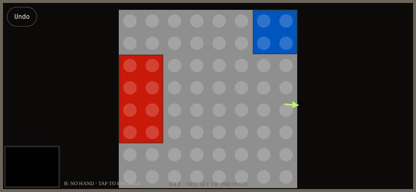
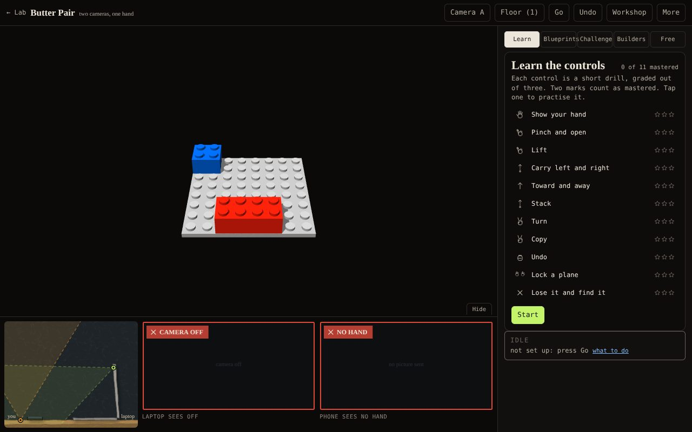
Script: orient.py. Data: orient.json.
What each camera sees, shown and animated
The main problem was that nobody could tell what each camera was seeing. Under the bed there are now three panels. The first is the setup seen from your right, in paper cut-outs after the PAELEO films: both cameras' views as vellum cones, your hand as a pinned puppet, and each camera's guess pinned where it thinks your hand is, with a strip for how unsure it is in its weak direction. The other two are each camera's own picture with the hand it found and a line saying what it reads, or why it lost you ("too close to the phone", "above its view"). Every change of state plays a short scene: the view pushes in toward the camera that changed, its cone dims, a paper tag drops in. The phone shows the same tag. The film runs the real model with a simulated hand through every state, a caption for each beat.
| Check (simulated cameras and hand) | Result |
|---|---|
| Hand held 7 cm above the phone | the phone panel reads "no hand, too close to the phone"; the tag "The phone camera lost your hand" drops in |
| Hand held 44 cm up | the laptop panel reads "no hand, above its view"; FLOOR ONLY; the phone's guess pinned at 39 cm with a ±2 cm strip |
| The film | runs through both, phone lost, laptop lost, carry, neither, back; loops every 40 s |
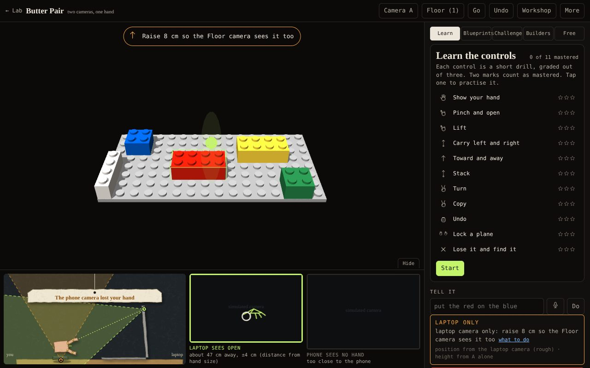
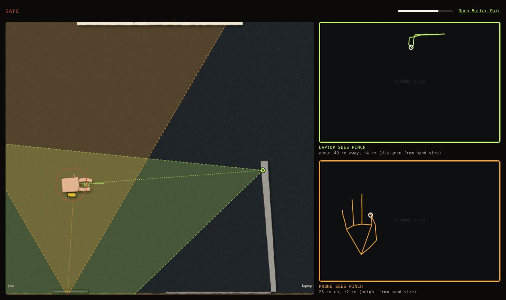
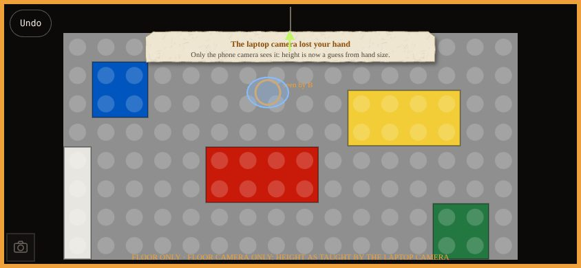
Script: eyes.py. On this machine the screenshots lag the film by a second or two.
Builders, Tell it, a steady start, and what the fourth real run showed
The fourth real run (3 November, Practice). The phone's camera worked: both cameras saw the hand in every gesture, and the fist now reads as a fist on both. It showed three things to fix:
- Reach was miscounted. All five rows were reached by hand, but the record said four were by touch or keys: it did not recognise "B+A" as both cameras. Fixed.
- Flat palms never registered. The palm read 0.28 on the phone camera and 0.06 on the laptop camera, which is clearly "flat over the Floor", but the hand was judged to be moving: speed came from raw readings, and real camera readings jitter much faster than a still hand moves. Speed now comes from the smoothed position. A palm toward the laptop read 0.29 against 0.18, just under the 1.6 ratio; the ratio is now 1.3. The same speed fix applies to recording both palms.
- The phone lay the other way round. The laptop camera was located 76 cm off to one side of the phone (89° off), which happens when the phone's short end points at the laptop. Toward and away then runs along the wrong side of the bed. Go now checks this as soon as it finds the laptop camera: it says which way to turn the phone, waits for it to be turned and still, and flashes again.
A steady start. The phone now goes through four steps in one fixed order, one screen each: Turn on camera (camera, and motion on an iPhone, in one tap), sideways (finishes by itself), Fill the screen (its own tap), flat. Permissions come before full screen because a permission prompt drops full screen; nothing is asked on its own afterwards. The laptop shows the code and QR inside the Go card, with the phone's steps ticking off. More, then Start-up flow, draws both devices' steps live.
Builders. A call-and-response game, after Wittgenstein's builders and Total Physical Response: the architect calls "Red!", "On the blue!", "Toward the laptop!", "Two fingers!", out loud and large on both screens, and your hand answers. Calls come faster as you get them and slower as you miss. Each miss is logged with what both cameras read, and the panel lists the calls you and the cameras agree on least.
Tell it. After Winograd's SHRDLU: type or say "put the red on the blue", "move it toward the laptop 3", "what is on the blue", and it acts in the blocks world, undoably.
| Check (simulated unless marked) | Result |
|---|---|
| Phone setup, one step at a time | camera, then (after the camera) sideways when turned, Fill the screen granted from its own tap, flat confirmed without motion readings, then the bed; upright later shows the turn notice; full screen dropped later shows a button, never a prompt |
| The laptop sees the phone's steps | the Go card and the live flow both show join, camera, sideways, full screen, flat as they happen |
| Builders with a simulated hand answering each call | 10 of 12 calls, score 185; the simulated hand's two fingers were not read as a V |
| Tell it, 14 sentences | adds, stacks, moves, turns, removes, undoes, answers where and what is on; says it does not see a green brick when there is none; asks which part for "make me a castle" |
| The fourth real run's laptop camera position | read as 89° off: Go would ask to turn the phone |
| Go, Practice, Stairs, inputs, phone tray | all pass |
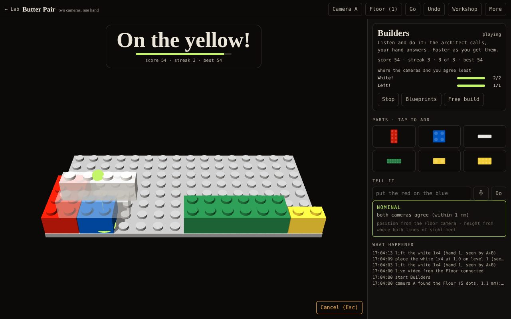
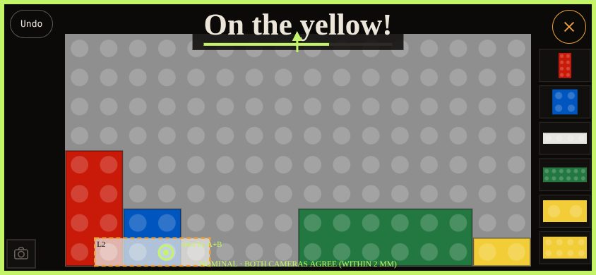
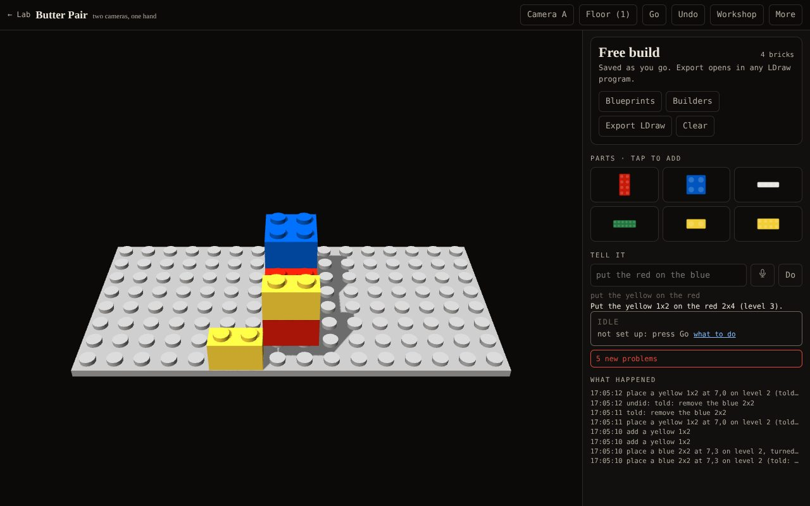
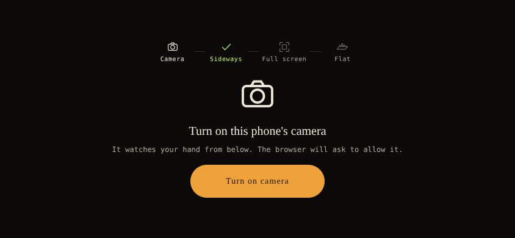
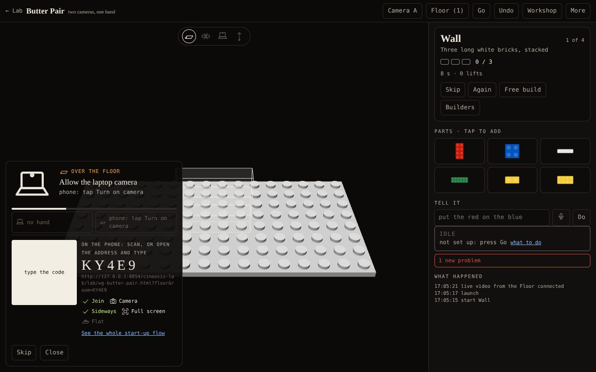
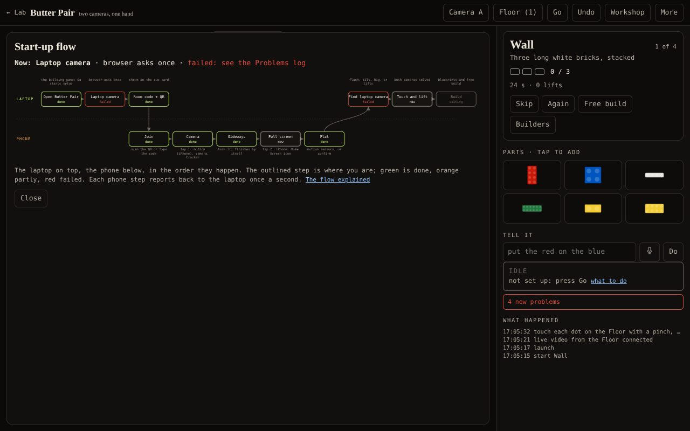
Scripts: builders.py, flow.py. Data: builders.json, flow.json.
A building game, a problems log, and the whole phone screen
Butter Pair now opens as a game: build a blueprint from a tray of parts. Everything technical moved behind one button, Workshop. Every failure is recorded with what the system believed at that moment.
- Blueprints. Wall, Stairs, Bridge, Gate. The laptop shows outlines on the 3D bed; the phone shows them from above, marked with their level. Tap a part in the tray (laptop or phone): it appears front and centre, off the outlines. A part placed in the right place, colour and level fills its outline with a chime; up to three stars for finishing, for few lifts with nothing off the plan, and for no undos at a good pace. Stairs is built one row further toward the laptop each step: practice for the hardest direction.
- Real work. Free build clears the bed for your own model. The bed is saved as you go and comes back after a reload. Export LDraw writes a
.ldrfile with the right part numbers, colours and positions for LDraw programs. - Less on each screen. The laptop shows the bed, the blueprint, the tray and one status box. The header has six buttons. When something needs doing, one line with an arrow appears over the bed (the Plan's sentence). The phone shows the bed, the outlines, the tray down its right side and the blueprint's progress; its camera picture is a small button until tapped.
- The whole screen on the phone. The last build asked for full screen only after the motion and camera permissions had been awaited, and browsers refuse it then. Now it is asked inside the tap itself, and every tap on the phone asks again until it is granted (browsers drop it on rotation and permission prompts). An iPhone does not allow a page to take the whole screen; the phone says to use Add to Home Screen.
- The problems log. Recorded automatically: the hand lost while holding a brick, every move into SAFE or out of NOMINAL with how long the previous state lasted, the laptop camera's line of sight set aside, an undo within 6 seconds of a placement (likely misplaced), each Go or Practice step that did not pass, the phone's camera errors, the phone falling silent or its camera sending nothing for 3 seconds, a camera below 8 frames a second, and any page error on either device. Each entry keeps the state, which cameras saw the hand, its position and uncertainty, both frame rates, the calibration in use, and the 3 seconds of readings before it. It survives a reload. Save report writes one file with all of it plus the last 20 seconds.
| Check (simulated cameras and hand) | Result |
|---|---|
| A simulated hand builds Stairs from the tray, part by part | 6 of 6 parts in place, 6 lifts, no undos, nothing off the plan: 3 stars (twice in a row). Before parts spawned front and centre, one run missed a part spawned in the far corner. |
| Free build, three parts, Export LDraw | 3001 red rotated, 2456 green, 3010 white, at 20 units a stud and 24 a brick |
| Hand hidden from both cameras while carrying | logged: SAFE after 2.1 s of NOMINAL; both cameras lost your hand while it held a red 2x4; 11 readings from the 3 s before |
| Undo 1.7 s after placing | logged as a likely misplacement, with the placement |
| An error raised and an error thrown on the phone | both arrived in the laptop's log |
| Save report | one file: failures, last 20 s (60 samples), phone camera status, calibration, Go record, scene |
| A tap on the phone | full screen granted (headless Chrome); a tap on its tray added the part on the laptop |
| Go, Practice, inputs | Go all green; Practice 5 of 5 rows, palms, 7 of 7 gestures; arrow keys, touch placement and Recover pass |
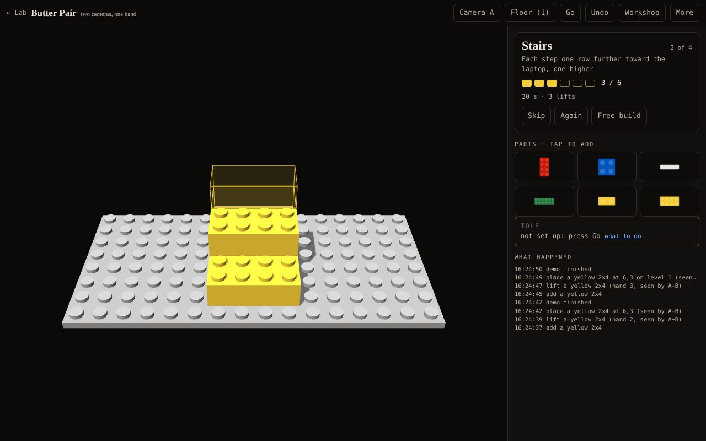
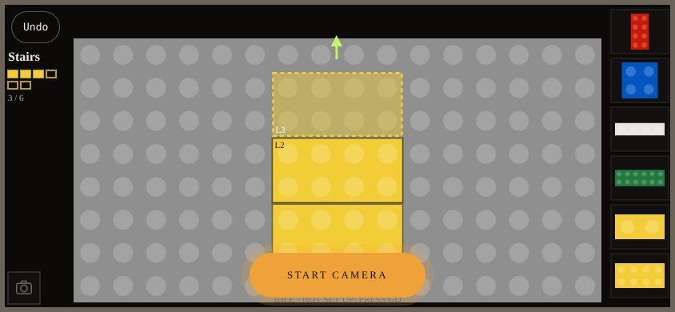
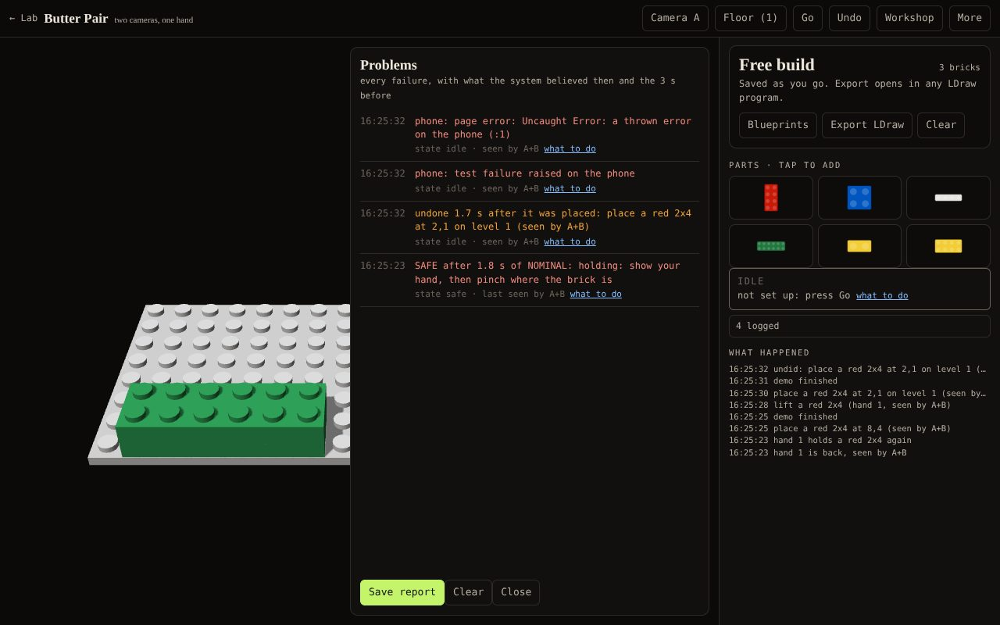
Scripts: play.py. Data: play.json.
Toward and away, blind spots, and a plan to act on
Moving a brick toward or away from the laptop was the hardest move, and the reason is physical: the laptop camera judges that direction only from how big your hand looks, and before it knows your hand's size that reading can be several centimetres off. The phone camera measures it directly, but in the real runs so far its camera never started. This build works on that direction from four sides, draws where each camera is blind, and turns what each camera believes into a move to make. A manual with a troubleshooting tree goes with it.
- Practice waits until it works. The first Practice step lights one row band at a time on the phone and the laptop; a white line shows where your hand reads. It moves on only when the hand holds inside the band. If it cannot see your hand, the reading jumps, the hand went the wrong way, went past, or barely moved, it says which and what to do. After 12 seconds without success the band widens; after each success it narrows. Ticks quicken and rise as the hand nears the band, like a crane closing on its mark. Arrow keys or a touch on the phone also count, and the record says which input reached each row.
- Zero. When the phone's camera is off, Practice first asks for an open hand held still over the middle of the phone. The laptop camera's line of sight to the pinch crosses the middle of the phone at one distance; from that distance and the hand's size in the picture it measures your hand. Its depth is computed from that size.
- Rows counted from where you picked up, with a margin. With only the laptop camera, a carried brick moves in whole rows counted from its starting row, using how far the hand has moved (which that camera measures well), not where it is (which it measures poorly). It changes row only when the hand crosses one of two dashed lines drawn in the Plan; they sit further apart when the reading is less certain.
- An honest band. The laptop camera alone tells rows apart only about one in two, so its practice band stops narrowing at plus or minus one row.
- The Plan. A drawing from above and from your right side: the area only the laptop camera sees (lime), only the phone camera (orange), neither (red), each camera's estimate with its line of sight, the stretch of that line where the hand could be when one camera is alone, where both lines meet, the carried brick's landing place, and an arrow with one sentence: the move to make. The same coverage tints the 3D bed. A hand seen by one camera is drawn with a faint cloud the size of its uncertainty.
- Each camera's belief over the other's picture. In Scope, the laptop camera's estimate is drawn over the phone camera's picture, as the model already was over the laptop camera's. On the phone, tap the small camera picture to enlarge it: a lime ring shows where the laptop camera thinks your hand is, over what the phone sees.
- Help where it fails. Each failed step on the cue card and each state other than NOMINAL has a "what to do" link into the matching branch of the troubleshooting tree.
| Check (simulated cameras and hand) | Result |
|---|---|
| Reach practice, both cameras | 5 of 5 rows; 2.1 to 4.3 s each; band narrowed from ±1.5 to ±0.5 rows |
| Reach practice, laptop camera only | zero measured the hand at 75 mm; 5 of 5 rows; band held at ±1 row |
| Laptop camera only, a hand that first goes the wrong way, then past the row | said "That moved it the other way", then "You went past it"; 5 of 5 rows, the first in 9.9 s |
| Carrying with only the laptop camera, hand still, then two rows toward the laptop | while still, the raw reading said rows 6 to 8 (the hand was over row 5) and changed 4 times; the brick's row changed once. After the move the brick was at row 7, the right row |
| The Plan, hand 5 cm above the phone (too close for its camera) | "Raise 11 cm so the Floor camera sees it too" |
| The Plan, hand high and near the laptop | "Lower 7 cm so the laptop camera sees it too" |
| Blind spots over the 128 bed cells | at 6 cm only the laptop camera sees any; at 24 cm both see all; at 45 cm only the phone camera |
| Go, then Practice | Go all green; toward and away 5 of 5, palms recorded, 7 of 7 gestures |
The earlier "6 of 7 gestures" came partly from the test, not the system: its simulated hand changed pose on a fixed clock while the test's steps ran late on a slow machine. The hand now follows the test's own step.
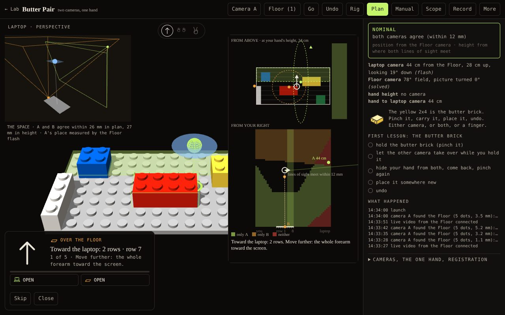
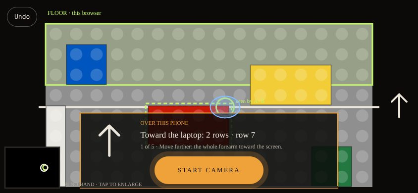
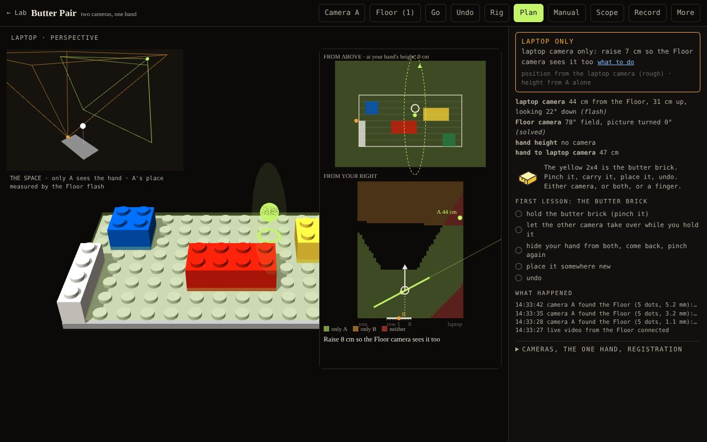
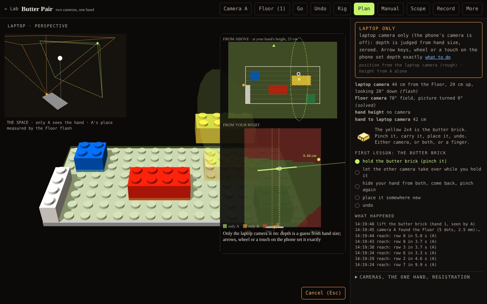
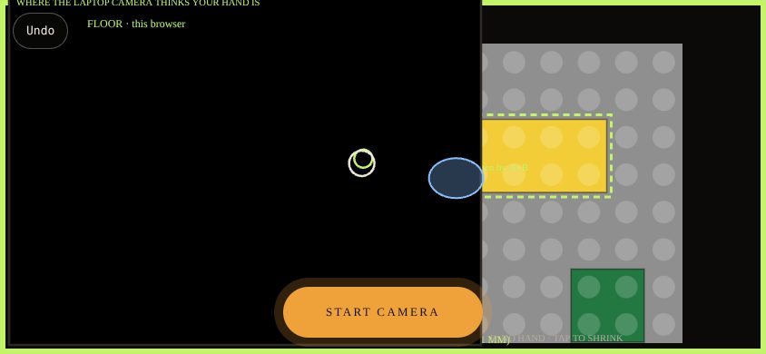
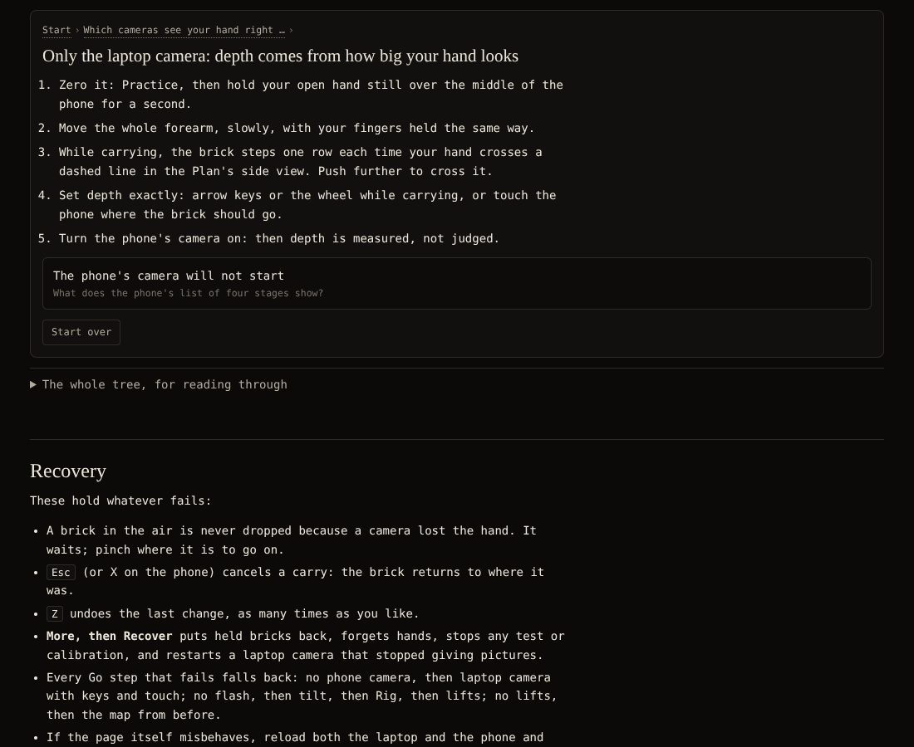
Scripts: reach.py, launch.py. Data: reach.json, launch.json.
Go: one button, and ways around every failure
The third real run (3 November) showed the phone's camera never started: every lift and every gesture has zero frames from it. Starting it had been silent, a motion permission, a camera permission, then a 10 MB hand tracker download with nothing on screen. Now:
- The phone shows each stage of starting its camera (motion sensors, camera, hand tracker, a hand in view) with what went wrong, a RETRY button and a slower tracker to try. It sends the same status to the laptop, whose Floor chip reads it out ("phone: fetching the hand tracker").
- Go is one button. It starts the laptop camera, shows the code for the phone, waits for the phone's camera, checks the Floor is level, locates the laptop camera, and solves both cameras from lifts if the phone's camera is on. Whatever cannot happen is skipped with the reason, and the system says which mode it is in. Palms and gestures are a separate Practice button.
- Locating the laptop camera by tilting the screen. If the flash cannot see the phone, the card says to tilt the screen forward until it does. Once the dots are found, it says to tilt back to where you work; the laptop follows how far its own picture moves and turns its camera model about the screen's hinge.
- Every input works together. While a brick is carried: arrow keys or the mouse wheel move it a stud at a time (the wheel is the depth one camera cannot see), R turns it, Enter or Space places it, and a touch on the Floor places it exactly where the finger is. Esc cancels. More, Recover puts held bricks back, forgets hands, stops tests and restarts a stalled camera; a stalled laptop camera also restarts on its own.
- Sound: a ratchet tick for each stud a carried brick moves, a lift, a set-down, a chime for each step done, a low tone for a failure. More, Sound turns it off.
- Measurements, live: where the laptop camera is and which way it looks, the Floor camera's field of view once solved, and how high each camera says the hand is.
- The model over the laptop camera's picture: in Scope, once the laptop camera is located, the bed, the bricks and the hand are drawn where that camera should see them.
- From the record: the laptop camera read a fist as a pinch because the detector reports a pinch before it ever looks for a fist; a fist is now recognised from the folded fingers. Gestures that need a camera that is off are skipped, not failed.
| Check (synthetic laptop camera, simulated hands) | Result |
|---|---|
| Tilt back 25° after the phone was found | measured 25.05°; camera now looks 5.7° (from -18.6°) |
| Tilt further forward 12° | measured -11.95° |
| Arrow keys while a hand carries; Enter | two left and one up moved it from (10,4) to (8,5); placed there |
| A hand carries, a finger touches the Floor | placed exactly where the finger touched |
| Recover while holding | brick back where it was; hands forgotten |
| Go, then Practice | Go all green; Practice palms recorded, 6 of 7 gestures (palm to the laptop flickers at the edge of the simulated Floor camera's view) |
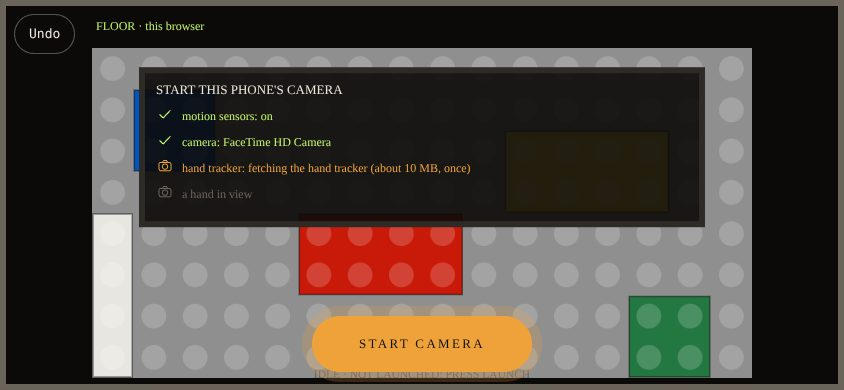
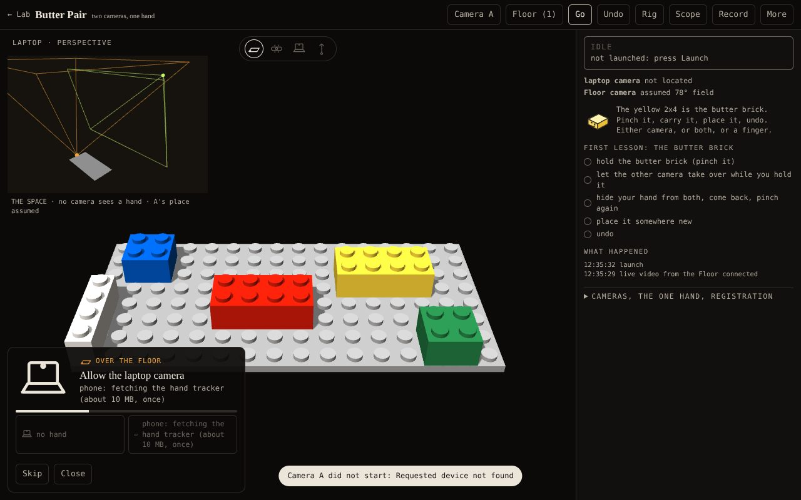
Launch, as cues instead of a checklist
The first run on real devices showed the checklist covering the stage and never saying which screen to look at. Gestures read 2 of 7. Launch is now a strip of five step icons at the top of the stage and one card in the corner: a large drawn icon of the pose, one line, a badge saying where ("over the Floor" or "toward the laptop camera"), a bar for how far along it is, and two chips saying what each camera reads right now. The chip of the camera that the gesture needs is outlined. The Floor shows the same cue large, on the side away from the lit dot; when the action is toward the laptop, an arrow on the Floor points at the laptop camera.
Camera A is no longer a dead end. If the flash cannot see the phone and there is no Rig, it is found from the lifts: a direct linear fit of camera A's view of each lift (the Floor camera's view of hand size gives a rough height) starts the joint solve. In simulation, with nothing else: check touch 2.9 mm; moving hand where both see it 3.7 / 1.5 / 7.3 mm.
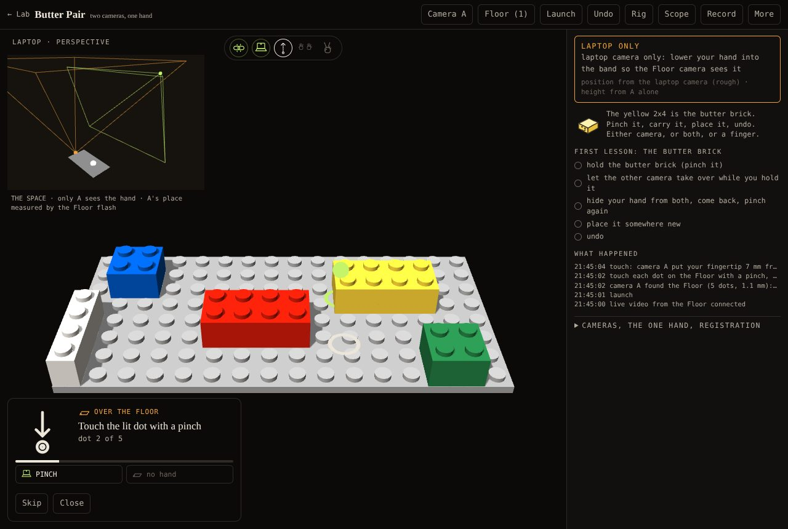
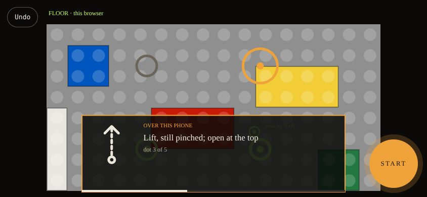
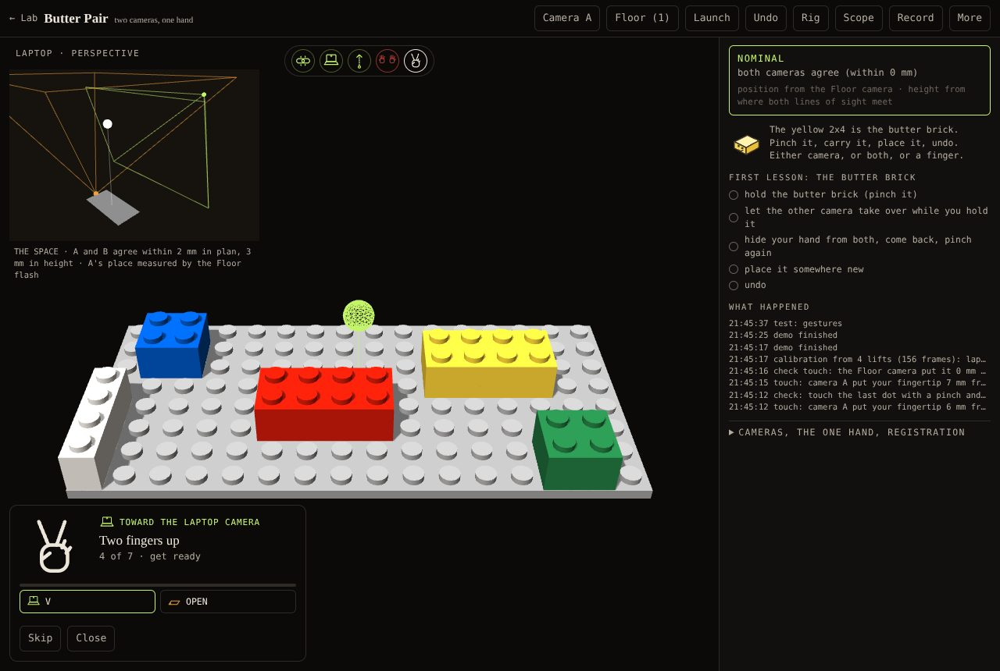
Calibration by touch, lift and two lines of sight
A touch fixes a point on the glass exactly. Lifting straight up from it, still pinched, the pinch travels a known line. Both cameras watch it climb. Each camera's line of sight to the pinch must cross that line, and both must cross it at the same height at the same moment. From four lifts that is several hundred constraints from three senses: the touch screen, the laptop camera and the Floor camera.
- What it solves, together: camera A's position, angle and field of view (the flash or the Rig is only the starting point); camera B's field of view, tilt, which end of the phone its lens is at, and how its picture is turned and mirrored; and how much each lift leaned, so a lift need only be roughly straight.
- Afterwards, no hand size anywhere: where both cameras see the hand, the thumb tip and the index tip are each placed where the two lines of sight meet, and the pinch is their midpoint in 3D. A fingertip is one physical point both cameras see; the midpoint drawn in each picture is not.
- Checked, not assumed: the last touch is held out. Its lift is placed by the solved cameras and compared with where the finger touched. The solve is used only if both cameras' lines of sight fit the lifts within 6 mm and the check is within 12 mm.
- Every touch adds to it. Ordinary touches on the Floor during work are kept (the last twelve) and the solve reruns.
Simulated cameras set up differently from what the system assumes
The simulator's Floor camera has a 72° field of view (the system assumes 78°), its lens 3 mm off, tilted 1.5° and turned 4°. Camera A starts from a Rig measured 3° and 2 cm wrong, unless stated.
| Setup | Solve | Floor camera field found | Check touch | Moving hand, both cameras (left/right / depth / height, mm) | Gestures, hand still (mm) |
|---|---|---|---|---|---|
| Before: no lift solve (Rig 3° and 2 cm off; Floor camera 72°) | not solved | - | - | 8.1 / 3.3 / 20.9 | 5.6 / 1.9 / 21.3 |
| Rig 3° and 2 cm off | solved | 73° (true 72) | 0.4 mm | 0.9 / 1.5 / 4.7 | 0.4 / 0.7 / 4.7 |
| Flash | solved | 72.9° (true 72) | 1.8 mm | 2 / 1.5 / 4.6 | 2 / 0.7 / 4.5 |
| Rig, lifts drifting 8 mm sideways | solved | 72.6° (true 72) | 8.2 mm | 1.1 / 2.3 / 4.6 | 0.4 / 1.6 / 4.7 |
| Rig, Floor picture turned 90° and mirrored | solved | 73.8° (true 72) | 0.8 mm | 1.9 / 2.8 / 4.9 | 0.4 / 1.7 / 4.9 |
| Rig, laptop camera 70° where 62° is assumed; Floor camera 80° | solved | 80.7° (true 80) | 0.9 mm | 0.7 / 2.2 / 3.1 | 0.5 / 1.1 / 3.3 |
Two faults were found on the way and fixed: lift records kept frames after the hand had moved on toward the next dot (a lift now ends when the pinch opens), and the solver compared mismatched entries whenever a line of sight stopped reaching its lift line. Script: calib.py. Data: calib.json.
Build 1: roles, one health state, Launch
From the engineering review. Nothing is averaged across a disagreement, and the hand is never the ruler.
- Roles per axis. Depth (toward the laptop) comes from the Floor camera only: the laptop camera looks along that axis and sees it worst. Height comes from the laptop camera's line of sight to the pinch, cut by the vertical line above the Floor camera's point: no guess about hand size. Left/right is across both cameras' lines of sight, so both are combined, but only while the check passes.
- The check. The laptop camera's line of sight must pass within 30 mm of the Floor camera's point (45 mm when camera A is placed from the Rig). Outside that for 0.3 s, the laptop camera is set aside and the state says by how much; back inside for 1 s, it returns.
- One health state on both screens, as a coloured frame and one line: NOMINAL, FLOOR ONLY, LAPTOP ONLY, FLOOR MOVED, SAFE.
- Laptop camera only: a confirming pinch. Opening the pinch where only the laptop camera sees the hand holds the brick; a second pinch and open there places it.
- Launch replaces Calibrate: Floor level and still; camera A located (flash, else the Rig); Floor camera map from three touches plus a fourth check touch not used in the fit; both palms flat, recorded as the baseline, with a check that both cameras agree which hand is left; each gesture by its camera. Each line is green, orange or red on evidence, kept, and can be saved.
- Cut: camera A learning its map from camera B; camera B learning its map from camera A; corner pinches in the interface; Demo, Redo and Reset moved under More; the camera panels folded under the health state.
| Check (simulated) | Result |
|---|---|
| Launch end to end, a simulated hand acting out each step | all five lines green; check touch 3 mm; two palms recorded; 7 of 7 gestures |
| The check with a correct pose, five scripts | 0 false alarms |
| Camera A believed 5° off | set aside ("misses by 63 mm"); state FLOOR ONLY |
| Camera A from a Rig 3° and 2 cm off | 0 false alarms; height error about 20.8 mm (left/right 6.8, depth 8.3) |
| Health states: both / laptop only / Floor only | NOMINAL / LAPTOP ONLY / FLOOR ONLY, each with its reason |
| Laptop camera only: open the pinch | held, not placed; a second pinch and open placed it |
| Script, correct pose (simulated) | left/right / depth / height |
|---|---|
| path | 4.5 / 8.6 / 5.4 mm |
| handoff | 8.1 / 4.7 / 19.6 mm |
| blackout | 3.1 / 1 / 4.9 mm |
| gestures | 2.5 / 2 / 5.8 mm |
| palms | 3.3 / 1.8 / 5.2 mm |
The check's threshold was set from measurement: with a correct pose the two cameras' pinch points sit 6–17 mm apart (each sees the thumb-index gap from its own side), up to 27 mm; a 5° error misses by 46–64 mm. Script: launch.py. Data: launch.json.
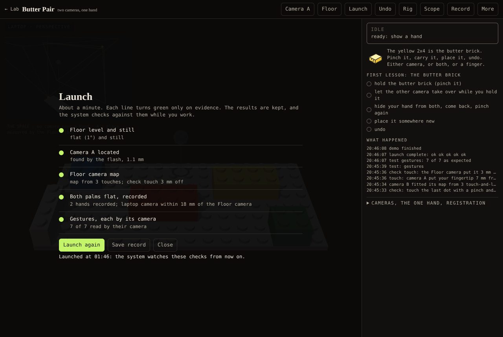
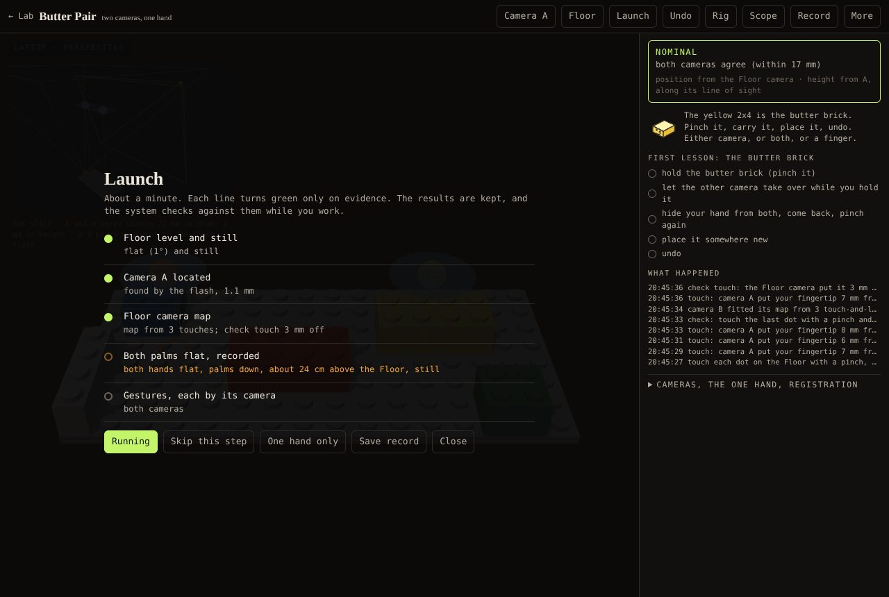
The rig: the setup, modelled to scale
Neither device knew where the other was, or which way the laptop camera pointed, so the working space could not be pictured. The Rig page models the physical setup in 3D: the Floor phone, the laptop with its screen angle and the camera at the top of it, or a camera on a wall or stand instead. It draws each camera's field of view and a grid of hand positions, coloured by who would see a whole hand there: white for both cameras, lime for the laptop camera only, orange for the Floor camera only. Below it are what each camera sees from where the model puts it. Press Camera A to put the laptop's live picture under its modelled view; when the drawn Floor sits on the real one, the model is right.
- A plain verdict: how far camera A is, how high, which way it looks, whether it can see the Floor, and the band of heights where both cameras see a hand over at least half the Floor.
- Suggested changes when there is no shared space: the smallest change to the screen angle, the distance, or a mounted camera's height and tilt that gives one.
- A phone as a measuring tool. Open the Rig page with
?phoneon any phone in the same room. Hold it flat against the back of the laptop screen and tap: the laptop's model gets the screen angle. The same for a wall camera's tilt and the Floor's level. - Butter Pair uses the model. "Use in Butter Pair" places camera A from it, so A no longer has to see the phone. A flash measurement, when there is one, still wins. The Floor shows an arrow toward camera A with its distance and height, and the heights where both cameras see your hand.
What the model shows about a typical laptop: a screen opened to 110° tilts the camera about 20° up. It never sees the Floor, and both cameras see a hand only 20 to 40 cm above the phone. The Floor camera needs the hand about 16 cm up before the whole hand fits its picture. Hands held lower than that are why it felt impossible.
| Check | Result |
|---|---|
| Rig set to the simulator's camera (27 cm up, 44 cm away, 19° down) | camera position identical (75, 475, 270 mm); view axis within 0.03° |
| Butter Pair placing camera A from the rig, A alone, before B corrects its depth | 9.7 / 111 / 9.3 mm |
| Typical laptop (screen 110°, Floor 20 cm in front) | camera 20° up, cannot see the Floor; both see a hand 20–40 cm up |
| A phone at 65° from level held against the screen | laptop model set to 115° |
| The Floor, with the rig in use | arrow toward camera A; "both cameras see your hand 16–40 cm above this phone" |
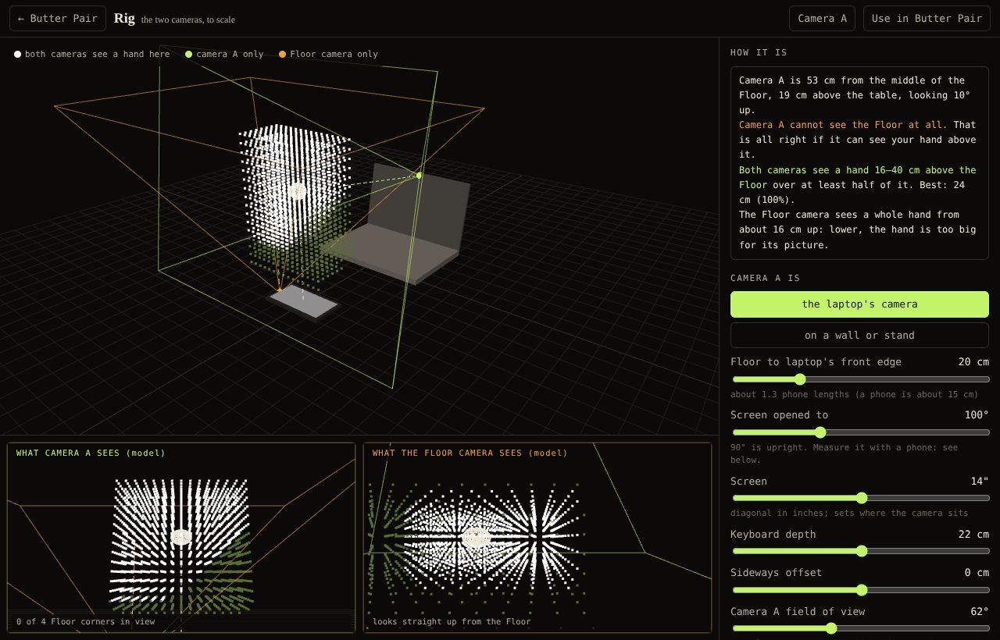
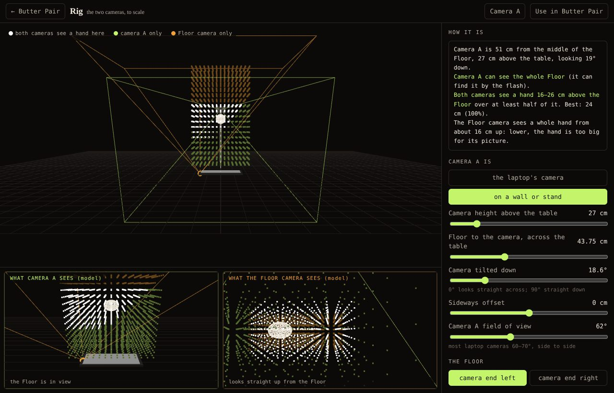
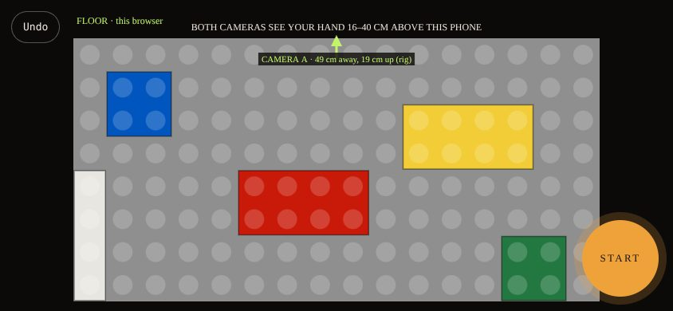
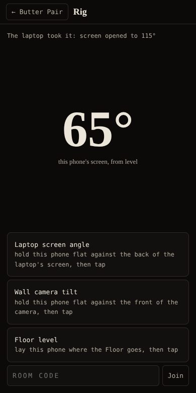
Script: rig.py. Data: rig.json. The model's angles and distances are as good as your measurements; a few degrees of screen angle moves camera A's picture by a few centimetres at the Floor, which the live-picture overlay shows.
Scope: what each camera sees and reads
The Scope button replaces the LEGO view with both cameras, large. You can watch your hand from the laptop and from the Floor at the same time, with what each camera reads from it.
- Live video both ways. The laptop shows the Floor camera's picture; the Floor shows the laptop camera's picture in its corner. It is a direct video call between the two devices, set up through the room code. If the call cannot connect, both fall back to three pictures a second.
- What each camera reads. Under each picture: pinch open or closed and the gap that decides it, what the hand detector calls the pose, how many of the 21 points are in view, how much the camera is trusted, whether the palm faces it, and where it puts the hand in mm.
- Six seconds of history. For each camera, a band coloured by what it read (grey open, orange pinch, blue V, red fist) and a line for the pinch gap, with the two thresholds dashed. Below them, what the one shared hand decided.
- Test positions. The Floor lights five dots in turn; hold a pinch above each. The report gives each camera's error in mm, and the combined one.
- Test gestures. Seven prompts on both screens: open, pinch, two fingers flat, two fingers up, fist, palm over the Floor, palm to the laptop. The report says what each camera read and whether the system did what that gesture is meant to do. Save report downloads it.
A small space: camera A does not need to see the phone
Calibrate tries the flash. If the laptop camera cannot see the phone, that is fine: you touch three dots and lift (camera B gets its map), then move your open hand over the Floor. While both cameras see it, camera A learns its map from B. The Floor shows the progress in per cent.
| No flash, simulated (left/right, depth, height) | Result |
|---|---|
| Camera A alone, map learned from B | 14.8 / 15.5 / 20.1 mm |
| Camera B alone, map from touches | 9.5 / 2.3 / 19.4 mm |
| Both | 11.4 / 8.3 / 19.8 mm |
Height is about 2 cm off here because, without the flash, hand size cannot be measured and is assumed. Bricks are placed by position in plan, so this shows in the height readout only.
The two tests, run with a simulated hand acting out the prompts (small-space calibration)
| Position | camera A | camera B | one hand |
|---|---|---|---|
| dot 1 | 19 mm | 4 mm | 5 mm |
| dot 2 | 7 mm | 2 mm | 1 mm |
| dot 3 | 21 mm | 4 mm | 4 mm |
| dot 4 | 6 mm | 3 mm | 3 mm |
| dot 5 | 7 mm | 1 mm | 2 mm |
| Gesture | camera A read | camera B read | system |
|---|---|---|---|
| open | open 100% | open 100% | as expected |
| pinch | pinch 92% | pinch 92% | as expected |
| Vflat | open 79% | V 79% | as expected |
| Vup | V 100% | open 71% | as expected |
| fist | fist 100% | fist 100% | as expected |
| palmFloor | open 100% | open 100% | as expected |
| palmTop | open 100% | open 100% | as expected |
The gesture test found two real faults: a still fist counted as a flat palm over the Floor, and a hand that dropped out of view kept its last palm command. Both are fixed. "Palm to the laptop" passed 5 of 6 runs: in this simulated setup the standing hand is at the edge of the laptop camera's picture, and the Rig page shows where that edge is.
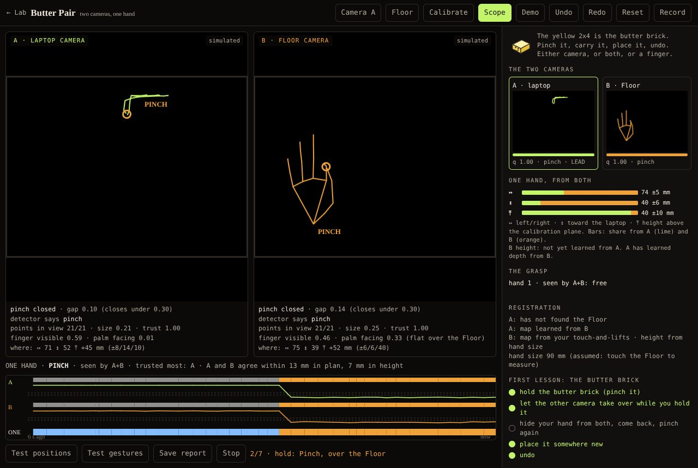
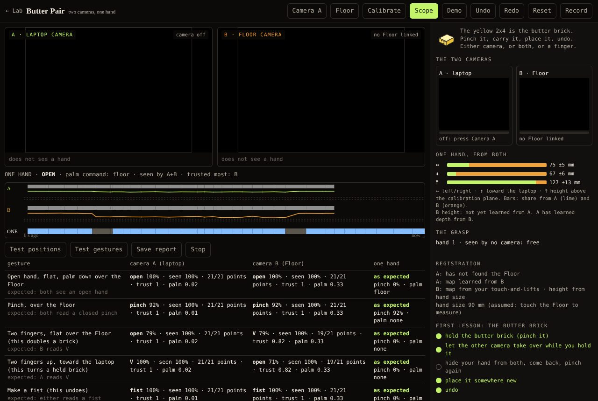
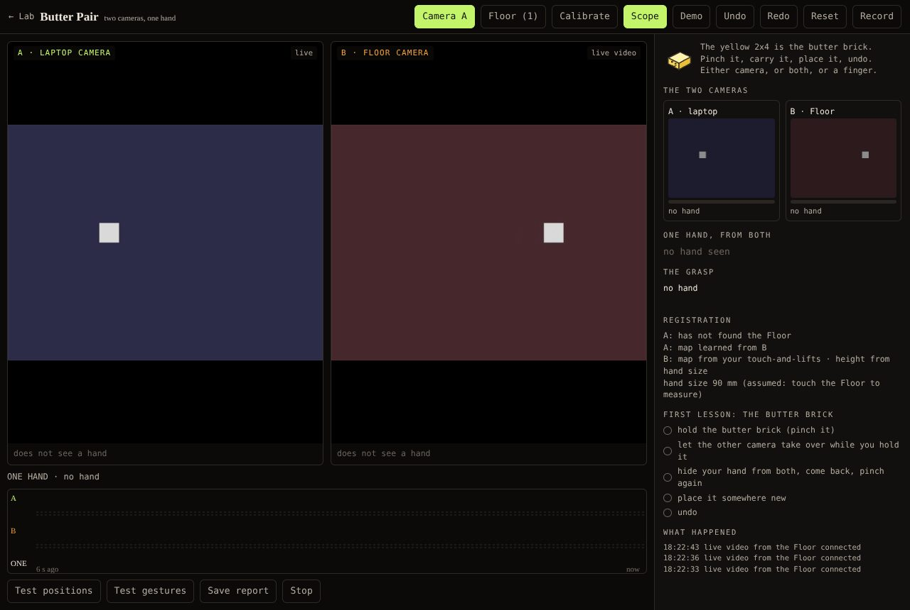
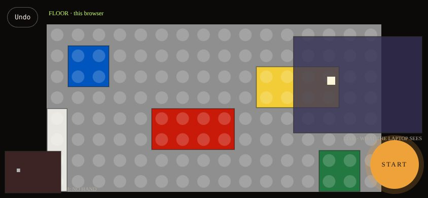
Script: ui3.py. Data: ui3.json.
The Floor finds itself
Corner pinches made calibration a ritual, tuned on simulated cameras, and nothing told you what the other camera saw. Calibration now uses the things in the room that already know where they are.
- The phone's screen is the marker. Press Calibrate. The Floor goes dark and lights five dots in turn. The laptop compares a camera frame before and after each dot, finds the dot, and fits the laptop camera's position over the phone. No printed markers. Camera B needs none: it is built into the bed, so its place is known.
- Touch, then lift. The Floor shows three dots. Touch each with a pinch, then lift straight up, still pinched. At the touch the pinch is at height zero exactly, which tells camera A how big your hand is. As you lift, camera B sees the hand rise over the point you touched, which gives B its map. Ordinary touches later keep refining both.
- The cameras teach each other. While both see the hand, B (which sees depth directly) corrects A's depth, and A (which sees height) gives B its height. With no touches at all, B learns its map from A.
- Moving the Floor is a normal action. The phone sends its motion sensors. While you carry it, its camera is paused. When you put it down, the laptop flashes again and finds it. B's map and your hand size stay valid, because they belong to the phone and the hand, not to where the phone lies.
- Each screen shows what the other camera sees. The Floor shows the laptop's picture with the outline of where it found the phone. The laptop shows the phone's picture in camera B's pane.
- Record. Record saves every observation from both cameras, the touches, the Floor's motion and a picture a second, as one file. Drop that file on the page to replay it through the same model.
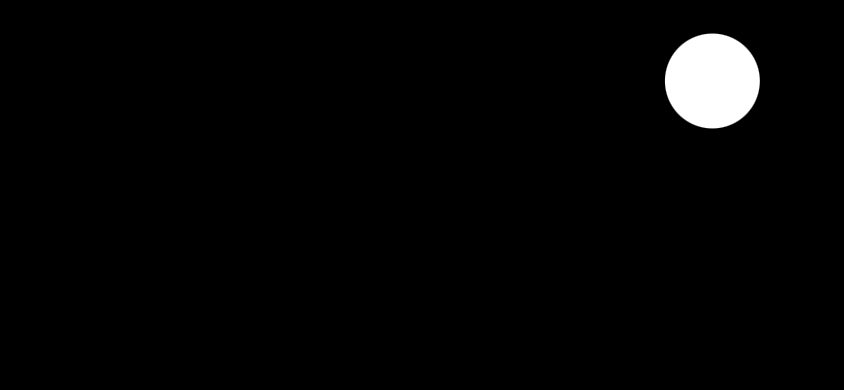
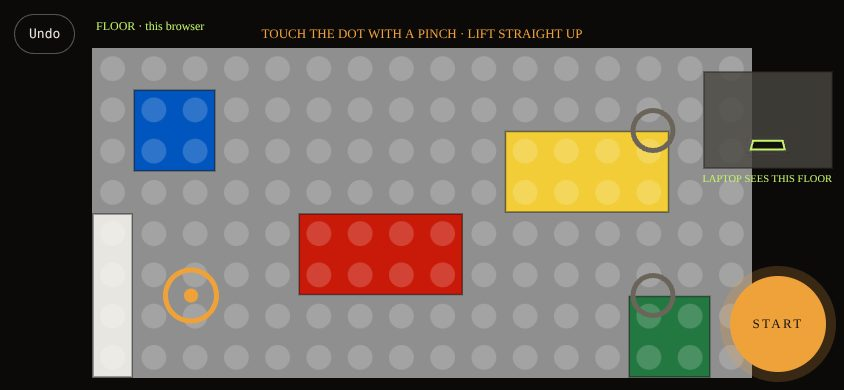
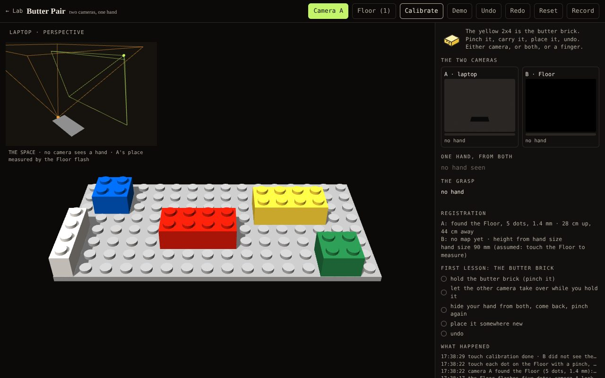
Measured (simulated cameras; laptop 45 cm from the phone)
| What | Result |
|---|---|
| Flash, through a synthetic camera picture and the real message loop between two windows | 5 of 5 dots, 1.4 mm residual; camera A placed 9 mm from its true position |
| Flash, landmark noise of 0.15% of the frame | camera A placed 27 mm from its true position, 1 mm residual |
| A touch, seen by camera A | fingertip placed 6 mm from where it touched; hand size learned 80 mm (true 85) |
| Both cameras, after calibration (left/right, depth, height) | 2.9 / 9.0 / 7.8 mm (2.9 / 4.4 / 8.0 where both see the hand) |
| Camera B alone, map from touches | 9.5 / 2.3 / 9.3 mm |
| Camera A alone, after B corrected its depth | 8.2 / 15.4 / 6.8 mm (before: depth 116 mm) |
| Camera B alone, map learned only from A, no touches | 8.1 / 16.0 / 7.4 mm |
| Floor picked up, moved 6 cm, turned 10°, put down | marked out of date on set-down; camera A left/right error 60 mm with the old registration, 8 mm after the re-flash |
| Dot finding when the whole picture changes (exposure jump) | refused, not mistaken for a dot |
| Recording saved and replayed through the model | pass |
| Hand-off, blackout, crossing hands, gestures, palms, corner-pinch fallback | pass (one track through the hand-off; 0 identity switches; double, turn, undo) |
What this changes for set-up: camera A has to see the phone. A laptop camera looking at your face usually cannot see the table just in front of it, so the Floor goes about 40 to 50 cm from the laptop, or the screen tilts forward. The Floor's corner picture shows whether it can.
Scripts: geo.py (geometry, touches, moving the Floor, replay), ui2.py (the flow in two windows). Data: geo.json, ui2.json.
The shared hand model
- Observe. Each device runs its own hand detector (21 points per hand). The phone sends its points to the laptop. The phone's timestamps are moved onto the laptop's clock using the smallest delay seen recently. Points older than 220 ms do not count.
- Map. Both cameras' points go into one frame: the bed, in millimetres. The pinch point is divided by the hand's apparent size, so it doesn't depend on how far the hand is from the camera. That size comes from whichever is least foreshortened: wrist to middle knuckle, or palm width. A flat hand pointing at the laptop camera hides the first but not the second.
- Match. Each observation joins the nearest hand in all three axes, each scaled by how uncertain that camera is on it. The detector's "left" and "right" labels are not used, because detectors swap them. A hand that no camera has seen lately is a poor match; a hand still holding a brick stays easy to pick up again.
- Combine. Each axis is a weighted average of the cameras that see the hand. The weight is the camera's precision on that axis times its view quality: how much of the hand is in frame, its size, whether the palm faces it, and how fresh the view is. The panel shows each axis's share from A and from B, live.
- Teach each other. While both see the hand, B learns height from A, and A learns depth from B. Each camera's offset from the joint estimate is also learned, so the position does not jump when one camera drops out.
- Intent. The pinch is a vote of the cameras that see the hand. Foreshortening can hide a gap but never invent one, so an open reading counts fully. A closed reading counts only as far as that camera can see the index finger. With too little evidence either way, the hand keeps the state it had. Lift, carry and place are a state machine on the hand. Losing both cameras pauses the carry; it never places. Coming back open does not place either; you pinch again.
- One command. Only commands change the bricks: place, double, undo, redo. Each has an id and is applied once, whether it comes from a hand, the mouse, a finger on the Floor, or arrives twice over the relay.
What each camera is good at (measured, simulated cameras)
One open hand traced a figure of eight over the bed for 8 s, at 18–28 cm above the phone. Errors are the root mean square, in millimetres, against the true pinch point. "Where both see it" counts only the frames where both cameras saw the hand.
| Who sees the hand | left / right | toward the laptop | height |
|---|---|---|---|
| A only (laptop, facing you) | 6.7 | 17.2 → 14.9 after learning from B | 7.9 |
| B only (phone, facing up) | 9.6 | 2.5 | 21.5 → 7.3 after learning from A |
| Both, combined, where both see it | 4.8 | 4.1 | 6.9 |
Camera A is good at left/right and height, and weak at depth. Camera B is good at left/right and depth, and weak at height. Combined, every axis is close to the better camera's figure, or better. Each camera's weak axis improves after it has been taught by the other. B's view is a cone above its lens, so at the far end of the phone it cannot see an open hand. There only A counts, and the panel shows A as the lead camera.
Registration
Calibrate asks for a pinch held 0.7 s over each of four corners, then the centre as a check the fit did not use. Both cameras record what they saw at each corner. B gets an affine map from its size-scaled image coordinates to the bed. A gets left/right from its image, depth from apparent size, and height relative to the calibration plane, corrected for its tilt. Simulated result: corner residual A 9 mm, B 0 mm; centre check A 6 mm, B 0 mm, combined 1–2 mm. The calibration has a revision number and is saved on the laptop.
A palm as a command: pick the camera, constrain the move
The two cameras see a palm differently, and that difference is the command. A hand lying flat over the phone shows camera B its whole palm (0.31 of a full palm in the simulation), while camera A sees it edge-on (0.02). A hand standing up with the palm toward the laptop shows the reverse (A 0.31, B 0.03). When the free hand holds either shape still for 0.3 s, the other hand's carry is constrained:
| Free hand | Read as | The carrying hand |
|---|---|---|
| flat over the phone | palm seen whole by B, edge-on by A | works in the floor plane: its position is read by camera B, and its height is held |
| standing, palm to the laptop | palm seen whole by A, edge-on by B | works in the laptop camera's plane: its position is read by camera A, and its depth is held (the brick slides along its row) |
| lowered, closed, or moving | no command | both cameras, every axis |
Measured with simulated cameras: one hand carried the red brick while the other lay flat over the phone. The carrying hand rose and fell 100 mm, and the brick's height stayed fixed (0 mm range), read by B only, while left/right still followed the hand. Then the other hand stood up facing the laptop. The carrying hand moved 34 mm toward and away from the laptop, and the brick stayed in its row (one row), read by A only, while it slid five columns with the hand. One place command at the end. Script: palms-measure.py.
Seeing the space you are working in
A small view in the corner of the laptop screen shows the shared space: the bed; each camera as a cone, A in lime and B in orange; the joint hand as a white sphere; each camera's own estimate of the hand as a small dot, with its line of sight from the camera, brighter for the camera with more weight; and the plane a palm command has chosen. The caption gives how closely the two cameras agree about the hand, for example "A and B agree within 6 mm in plan, 13 mm in height". If the gap grows, the calibration has drifted or a device has moved. The camera positions in this view are assumed, not measured.
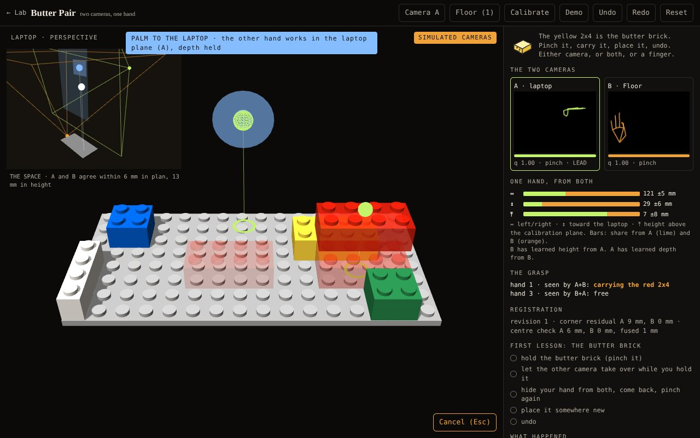
Hand-off, blackout, crossing hands, gestures
| Run (simulated cameras) | Measured result | |
|---|---|---|
| Hand-off. Pinch the butter brick while only A sees the hand (B blocked), carry it while both see it, then A is blocked and only B sees it; open to place. | One hand id throughout. One command: "place the butter brick … (seen by B)". Errors: A-only stretch 3.4 / 6.9 / 2.6 mm; both 2.3 / 2.2 / 8.3; B-only 7.6 / 0.8 / 22. Largest jump at a camera change: 13 mm. | done |
| Blackout. Carrying the red brick, both cameras lose the hand for 0.9 s. It comes back open, then pinches again, then opens. | States: carrying → paused → carrying. Nothing was placed while it was out of view or when it came back open. One place command after the final open. | done |
| Crossing hands. Two hands cross the bed. Halfway, the detector swaps their left/right labels. | Identity switches: 0 and 0. Hands are matched by where they are, not by their labels. | done |
| Gestures by camera. Two fingers shown to B (under the hand) over the red brick. Lift the copy. The other hand shows two fingers up to A (B cannot see that hand). Place, then a held fist. | "double the red 2x4 (V seen by B)", then "place a copy … turned 90° (seen by A+B)", then one undo. The same two-finger shape meant different things to the two cameras. | done |
| An open hand moving for 8 s (the measurement run above), with one camera, the other, and both. | No false pinch: no command was issued in any of the five runs. | done |
Script: pair.py. Data: pair.json. The cameras are two pinhole models. The laptop camera is 28 cm behind the phone and 27 cm up, with a 62° field. The phone camera is at the phone's short end, facing up, with a 78° field. They watch a 21-point hand with 2.5 px-equivalent noise. The page runs these scripts through exactly the code real cameras use.
The instrument
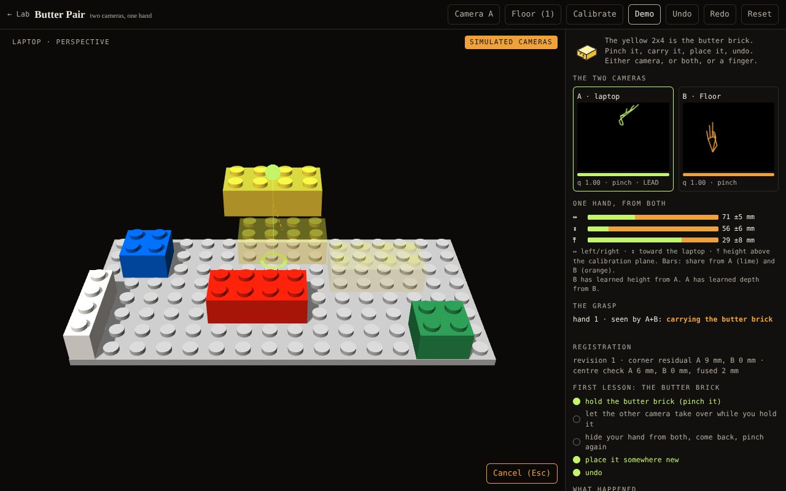
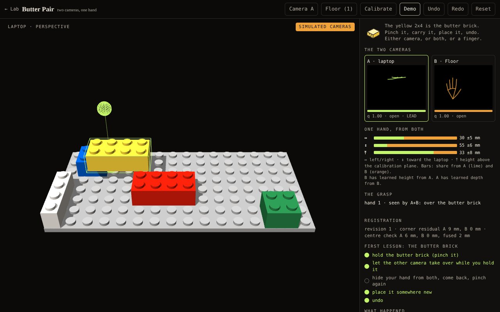
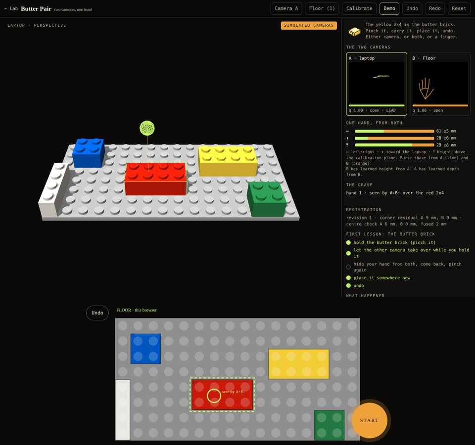
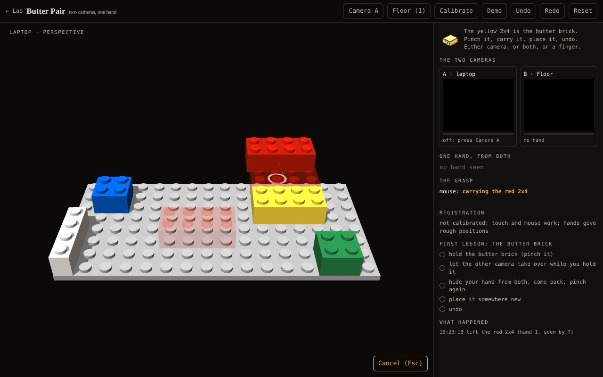
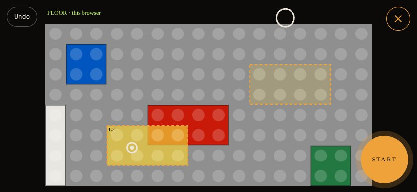
Interface checks (real mouse and touch input; the phone through a relay)
| What was done | Result | |
|---|---|---|
| Floor opened in a second window. | Linked in about 10 ms, with the 5 bricks. | done |
| Mouse: hover the red brick, press, drag, release; then Z. | Hover found the red brick; carrying while dragging; placed at 10,6; Z put it back at 5,2. | done |
| Floor: press the butter brick, drag, hold still 0.6 s, lift; then Undo on the Floor. | Still held after 0.6 s without moving; placed when lifted; Undo on the Floor reached the laptop in under 0.2 s. | done |
| Demo: calibrate, hand-off, blackout, gestures, in real time with both screens open. | Calibration revision 1 (A 9 mm, B 0 mm; centre combined 2 mm). The butter-brick lesson ticked: hold it, other camera takes over, place, undo. | done |
| Phone in a separate browser; typed the room code. Simulated camera B on the phone, camera A on the laptop, through a local MQTT relay. | Joined in about 40 ms. The phone's observations crossed the relay and joined the laptop's on one hand, which lifted and placed the red brick. Which observation arrives first decides whether there are briefly two hands before they merge. | done |
Script: pairui.py. Data: pairui.json. Test relay: relay-test-broker.py. The test machine cannot load the page's fonts, so the screenshots use fallback fonts.
How the brief's rules are met
| Rule | Where it is |
|---|---|
| Observation is not pose; pose is not intent; intent is not an edit. | Separate stages: observations per camera, combined hand per track, a state machine per hand, commands on the bricks. |
| Camera ownership never decides object ownership. | The grasp is on the hand track. The panel says which cameras see the hand while it holds the brick. |
| Tracking loss cannot imply release. | Losing both cameras pauses the carry. Coming back open does not place. Measured in the blackout run. |
| Changing viewpoint cannot change the scene. | The laptop and the Floor draw the same bricks and hands from one document. |
| One completed manipulation is one undoable edit, applied once. | Command ids; a relay delivering twice changes nothing. |
| Do not average unrelated camera coordinates. | Each camera is mapped into the bed frame by its own registration first, then combined with per-axis weights. |
| Choose the camera with the better view. | View quality per frame (completeness, size, palm facing, freshness). The lead camera is shown. A closed pinch counts only as far as the camera can see the index finger. |
| Hand-centred landmarks are not room coordinates; planar registration is not full depth. | Height is relative to the calibration plane, and depth from apparent size is called a weak axis. Both are marked as such, and both are taught by the other camera. |
Limits
- Every number here is from simulated cameras. No real camera was used. Real detectors add their own errors, delays and dropouts, so these figures are what the model does with clean input, not what a person will see.
- The public relays (EMQX, HiveMQ, Mosquitto) and real phones are untested. The relay was a local broker. Through a public relay, expect tens to a few hundred milliseconds of delay. B's observations then count for less, because they are older.
- Hand size starts as an adult guess (9 cm) and is measured by touches on the Floor; height is metric above the phone once camera A has found it.
- The flash needs the laptop camera to see the phone's screen. Strong light on the screen, or a phone at a steep angle to the camera, can hide the dots; the page then says how many it found and falls back to corner pinches.
- The focal length of camera A is assumed (a 62° webcam), because the phone is too small in the laptop's picture to measure it. A wider or narrower webcam shifts A's depth, which B then corrects while both see the hand.
- Motion sensors on iPhone need permission, asked when you press Start on the Floor. Tilt is shown but not yet used to correct B's view.
- The phone camera sees a cone above its lens. At the far end of a phone held sideways, an open hand is out of its view below about 25 cm, and only the laptop camera counts there.
- Bricks snap to studs in plan, and the height of a stack comes from what is under the footprint. Hand height is shown, but it does not set the level.
- The relay is public: anyone with the room code can read and send in that room.
- The film editor's Floor still uses its earlier, simpler hand-off; the palm commands and this hand model are not in it yet. The natural mapping: the floor plane is the shot's ground (position and depth), and the laptop plane is the picture (x and y on screen).
- A palm command assumes the hand is held flat or upright; a tilted palm reads as neither, and nothing is constrained.